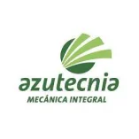
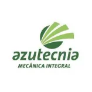

La Refinería fue fundada en el año 1945, tiene más de 60 años de experiencia acumulada, con una norma potencial de 320 t de azúcar refino por día.
Comprometidos con el desarrollo local y la protección del medio ambiente.
Misión
La Empresa Agroindustrial Azucarera George Washington es una organización abierta que produce caña de azúcar, azúcar refino de alta calidad, energía eléctrica que aporta al CEN, y diversifica sus producciones a costos competitivos para satisfacer las necesidades de sus accionistas y clientes en armonía con el medio ambiente.
Visión
Nuestra organización ha alcanzado su máximo potencial productivo, consolidando su posición como líder en la producción de azúcar refino de alta calidad en el país, logrando mayores niveles de exportación y certificando el Sistema Integrado de Gestión. Nos hemos convertido en los mayores aportadores al Sistema Electro Energético Nacional en el territorio a partir de la gestión sustentable de la empresa, trabajando en el mejoramiento continuo para de esta forma disminuir los costos a niveles mínimos y satisfacer a nuestros clientes y partes interesadas con la generación de altos niveles de utilidades y el reconocimiento social y ambiental a la organización.
Somos una empresa de clara proyección estratégica en el desarrollo de la Agroindustria Azucarera Cubana, y que a partir de su presencia en el mercado nacional e internacional con productos y servicios de calidad y valor agregado, contribuya a la sustitución de importaciones y respalde los planes de desarrollo socioeconómico del país, contando para ello con profesionales y trabajadores de elevadas competencias y un alto sentido de pertenencia al sector.
La Empresa Agroindustrial Azucarera George Washington, integrada al Grupo Azucarero, forma parte de treinta y nueve entidades, que surgen con pérdidas producto del proceso de reestructuración del sector. La Empresa Agroindustrial Azucarera George Washington integrada al grupo azucarero, en forma abreviada Azcuba con domicilio social sito: Batey George Washington, Municipio de Santo Domingo Provincia de Villa Clara.
La Empresa Agroindustrial George Washington, se crea con todos los bienes de las Unidades Empresariales de Base, Central Azucarero George Washington, Atención a Productores Agropecuarios George Washington y determinados 12 activos de la Oficina Central de la Empresa Azucarera Villa Clara, según Resolución 98 del Grupo Azucarero Azcuba.
67
clientes activos
11
productores asociados
11
cartera de proyectos
Fondo de tierra (ha)
dedicadas a:
- Caña: 15064.48
- Agropecuario: 6463.50
- Vianda: 455.60
- Hortalizas: 44.01
- Grano: 154.89
- Frutales: 83.72
- Pecuario: 4391.38
- Forestal: 1333.9
Para brindar nuestros
servicios y productos
Equipo de Trabajo
La Empresa Agroindustrial Azucarera George Washington cuenta con un total de 645 trabajadores, destacando en la fuerza laboral y la experiencia que poseen los trabajadores en la rama azucarera.
La Empresa Agroindustrial Azucarera George Washington se centra en brindar productos con costos competitivos, gestionando la innovación como parte de su cultura empresarial, para esto cuenta además con un grupo de proveedores de alta gama que le permiten optimizar los procesos y asegurar así el crecimiento productivo en la fabricación de azúcar de alta calidad.
 

¿Qué opinan nuestros clientes?
La Empresa Azucarera Washington representa para Tecnoazúcar un Proveedor muy importante, básico para cumplir nuestra misión, siempre confiamos en disponer de un producto de alta calidad el que espera y prefiere el cliente final. Confianza, empatía y buena comunicación nos une en esta relación Comercial de proveedor y Cliente.
... es un producto (Azúcar Refino Clase A) que a lo largo de los años ha mostrado una verdadera estabilidad en los requisitos que establece la norma, comparados con otros suministradores del área, muestra un mejor resultado en los productos finales que elaboramos, logrando permanecer como nuestro suministrador en plaza ....
Estadísticas del mercado internacional
Precio del azúcar crudo
14/8/2023
- 23.71 Cts/lb -
Precio del azúcar refino
14/8/2023
- 687.30 Dls./TM -
Precio del petróleo
14/8/2023
- 86.94 dólar/barril -
Precio del alcohol
14/8/2023
- 0.67 Dls./lt -
Datos de Contacto
Comuníquese con nosotros,
será un placer atenderles